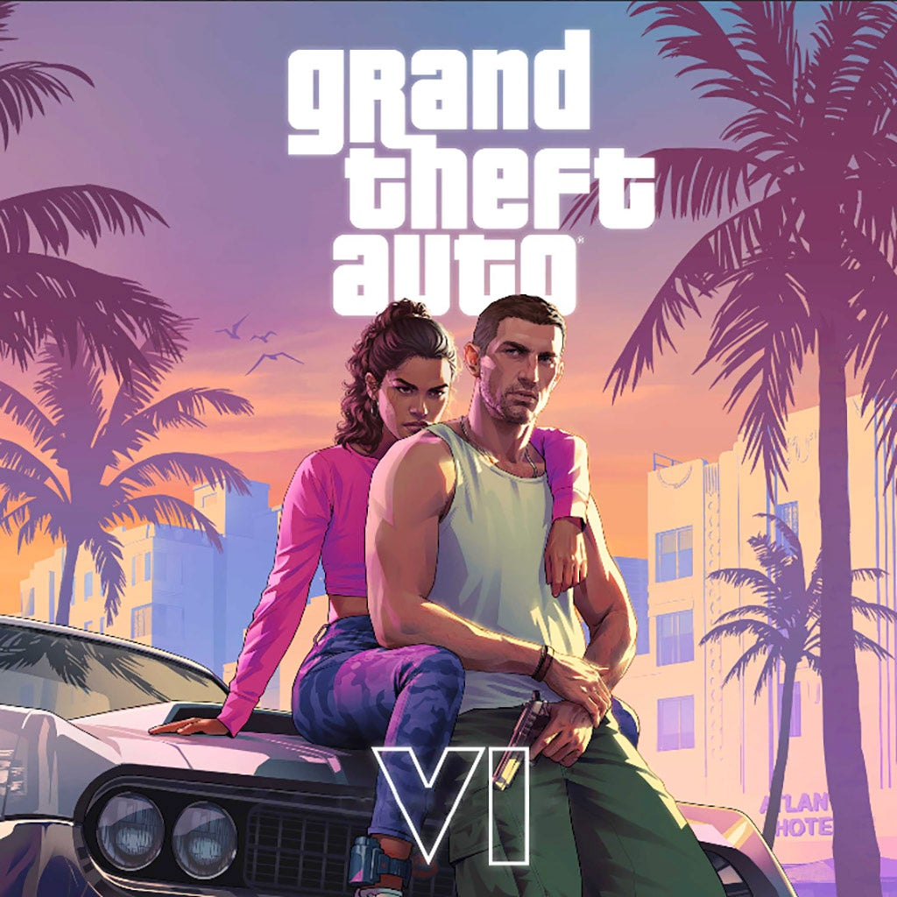

Los juegos
más destacados





Si eres uno de los jugadores que están emocionados por The Legend of Zelda: Echoes of Wisdom, te tenemos buenas noticias, ya que se acaba de revelar el tamaño que se necesitará para la descarga del juego y no tendrás que sufrir demasiado.

ELDEN RING es uno de los mejores juegos de la historia y FromSoftware cumplió con la cuota de calidad que se esperaba de su expansión DLC. De hecho, es tan buena que acaba de destronar a un histórico rey que defendió exitosamente su corona durante 8 años.

Hay muy buenas noticias para los jugadores de Fortnite: Battle Royale, principalmente para los fans de Disney y sus populares franquicias. Lo que pasa es que una filtración confirmó una de las colaboraciones más esperadas para el juego de Epic Games: un atractivo crossover con Piratas del Caribe.

Discord es una de las aplicaciones de mensajería más populares en PC y móviles, pues ya demostró ser muy útil para organizar sesiones de gaming con los amigos o realizar reuniones de trabajo. Si bien es un servicio gratuito, ofrece una versión premium que otorga beneficios adicionales. Por suerte, obtener una membresía es más fácil que nunca.

Dragon Ball: Sparking! ZERO emocionó de sobremanera a los fanáticos debido a que es la esperada secuela de la saga Budokai Tenkaichi. Ahora que ya conocemos la fecha de lanzamiento y otros detalles del sistema de combate, gran parte de la conversación gira en torno a los personajes que conformarán el roster. Los lectores del manga mantienen la esperanza.